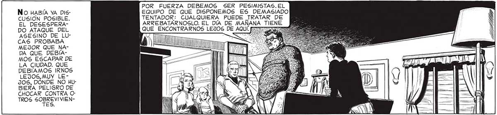
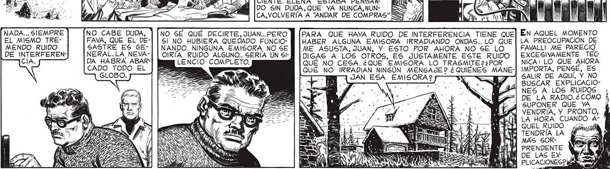

POR FUERZA DEBEMOS SER PESIMISTAS. EL 65 No HABÍA YA DIS- EQUIPO DE QUE DISPONEMOS ES DEMASIADO CUSION POSIBLE. TENTADOR: CUALQUIERA PUEDE TRATAR DE EL DESESPERA- ARREBATARNOGSLO. EL DÍA DE MAÑANA TIENE DO ATAQUE DEL E AQUÍ TD ASESINO DE LU- === MEJOR QUE NA- | AAA NA DA QUE DEBÍA- pu MOS ESCAPAR DE LA CIUDAD. QUE DEBAMOS IRNOS LEJOS, MUY LEJOS, DÓNDE NO HUBIERA PELIGRO DE CHOCAR CONTRA O: TROS SOBREVIVIEN> 51... PENSAR QUE AYER A ESTA MISMA HORA AN DUVE DE COMPRAS POR LA CA LLE SANTA FE... NO PIENSES EN ESO, ELENA ... PIENSA EN LA CASITA QUE NOS SERVIRA DE REFUGIO EN LA MONTANA ...é Y, FAVALLI2 ¿NO PESCAS NADA? E PE Topos estuvimos |Por SUPUESTO, DE ACUERDO. HU- OC BIÉRAMOS DESEADO PARTIR EN SEGUIDA, PERO NO ERA POSIBLE: HABÍA QUE AGUARDAR LA PROTECCION DE LA NOCHE PARA SALIR A BUSCAR EL CAMION, LA NAFTA, TODO LO QUE NECESITABAMOS PARA EL LARGO VIAJE. NO NOS QUEDAMOS 10505. QUIÉN ME DIRÍA QUE ALGUNA VEZ HARÍA DE SASTRE... No DiJO MAS, PERO ERA SUFICIENTE. ELENA ESTABA PENSAN: DO SIN DUDA, QUE YA NUNCA,NUN- | CA,VOLVERÍA A “ANDAR DE COMPRAS” NADA... SIEMPRE NO CABE DUDA, EL MISMO TRE- FAVA, QUE EL DEMENDO RUIDO SASTRE ES G6EDE INTERFEREN- NERAL.LA NEVACIA. DA HABRA ABARCADO TODO EL GLOBO. NO SÉ QUÉ DECIRTE, JUAN...PERO M [PARA QUE HAYA RUIDO DE INTERFERENCIA TIENE QUE] EN AQUEL MOMENTO 5! NO HUBIERA QUEDADO FUNCIO- M |HABER ALGUNA EMISORA IRRADIANDO ONDAS... LO QUE | LA PREOCUPACIÓN DE NANDO NINGUNA EMISORA NO SE | ME ASUSTA, JUAN, Y ESTO POR AHORA NO SE LO FAVALLI ME PARECIO OIKRIA RUIDO ALGUNO... SERIA UN Sl- DIGAS A LOS OTROS, ES JUSTAMENTE ESTE RUIDO EXCESIVAMENTE TEC LENCIO COMPLETO. QUÉ NO CESA.¿QUE EMISORA LO TRASMITE 22POR NICA: LO QUE AHORA a QUÉ NO IRRADIAN NINGÚN MENSAJE? ¿QUIENES MANE-| IMPORTA, PENSE, ES 7 AN; JAN ESA EMISORA? — SALIR DE AQUÍ, Y NO pa rr ( BUSCAR EXPLICACIONES A LOS RUIDOS DE LA RADIO.é¿ COMO i SUPONER QUE YA VENDRIA, Y PRONTO, Í LA HORA CUAND 7 ] QUEL RUIDO ¿is Y TENDRÍA LA Y MAS SOR" PRENDENTE y Í DE LAS EX P/3u eE PLICACIONES ? pd a 4 y

